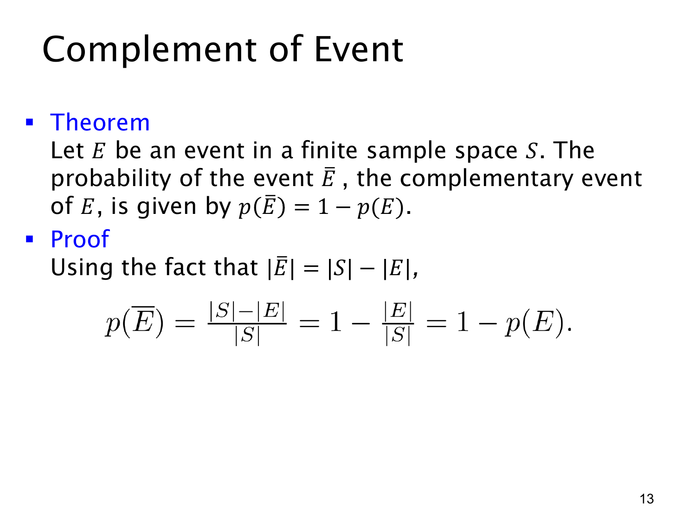

L1.9 · 第 13 页讲解原文
查看这一页课件

补事件的概率
事件 E 的补事件（complementary event）记作 E，是样本空间中所有不属于 E 的结果：
E=S∖E.
因此 E 与 E 不会同时发生，但每次试验必然发生其中一个。定理是
p(E)=1−p(E).
课件用有限等可能样本空间的计数证明：因为 ∣E∣=∣S∣−∣E∣，所以
p(E)=∣S∣∣S∣−∣E∣=1−∣S∣∣E∣=1−p(E).
这个证明使用了 Laplace 公式，所以需要等可能前提。不过补事件定理本身也适用于不等可能的概率模型：两个互斥事件的并集为 S，概率相加为 1，便得到同一结论。
例如公平骰子中，E 为“大于 3”，p(E)=1/2；补事件是“至多为 3”，概率同样为 1/2。要准确取补：大于 3 的否定是小于或等于 3，不能遗漏等于 3。
补事件法尤其适合“至少一次”问题。“至少一次成功”的补事件是“一次也没有成功”，因此
p(至少一次成功)=1−p(全部失败).
只要补事件更容易计算，就可以先算它，再用 1 减去。字母排列中“不相邻”的概率，也正是用“相邻”的补事件得到的。